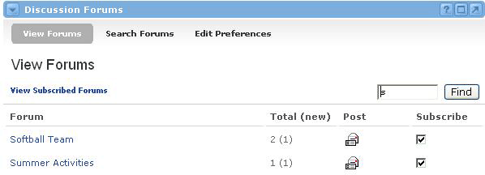

The Discussion Forums channel is a forum for the users associated within the portal community. A discussion board (known also by various other names such as discussion group, discussion forum, message board, and online forum) is a general term for any online "bulletin board," where you can leave and expect to see responses to messages you have posted.
There are two levels to the channel: Forums and Messages. All messages must be posted within a Forum. Therefore, Forums serve as a means to group messages by a certain subject or user group. A Forum audience can contain the entire portal community user list, or it can be limited to any combination of individual users or groups.
The Discussion Forums channel allows users to view, post, and delete messages, attach files and links to messages, and archive an entire Forum (if permissions allow). Users can also search Forums for specific text in the subject, body, or attachments of any message. Finally, users can select which Forums they would like to view versus which ones they want to ignore. This process is called subscription.
Subscribing to ForumsThe first step in using the Forums channel is subscribing to a forum. When you subscribe to a Forum, you are indicating that you would like to read the messages within this Forum, and possibly post some messages of your own. When you subscribe to a Forum, it will show up in the channel when you click the View Subscribed Forums link within the channel.
To subscribe to Forums, follow these steps:

Forum Preferences
To change your viewing preferences in the Discussion Forum channel, follow these steps: